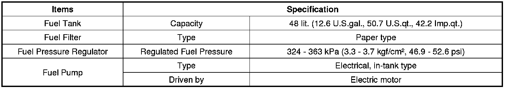
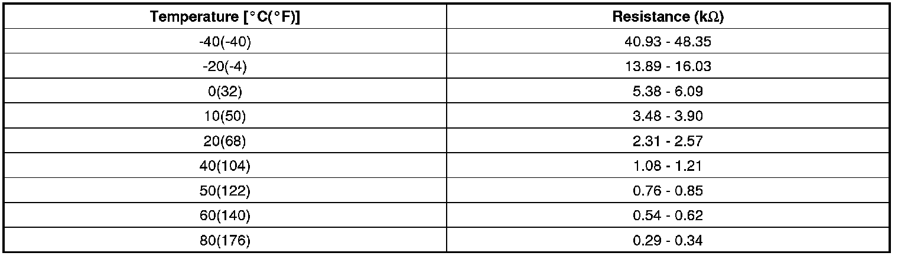
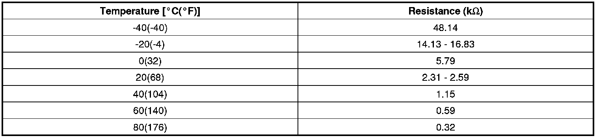
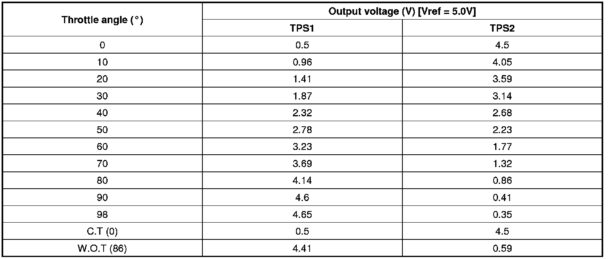
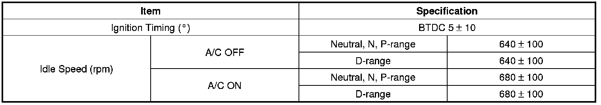
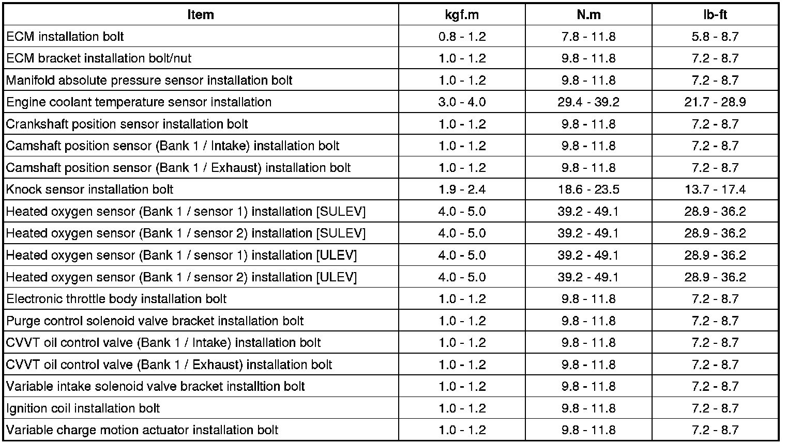
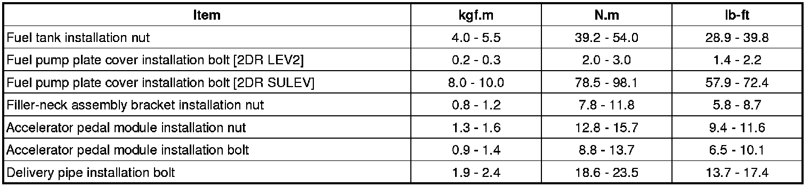

Powertrain Management: Specifications
Specifications
Fuel Delivery System

Sensors
Manifold Absolute Pressure Sensor (MAPS)
- Type: Piezo-resistive pressure sensor type
- Specification
Intake Air Temperature Sensor (IATS)
- Type: Thermistor type
- Specification

Engine Coolant Temperature Sensor (ECTS)
- Type: Thermistor type
- Specification

Throttle Position Sensor (TPS) [ integrated into ETC module]
- Type : Hall IC Non-contact sensor type
- Specification

Crankshaft Position Sensor (CKPS)
- Type: Magnetic field sensitive Type
Camshaft Position Sensor (CMPS)
- Type: Hall effect type
Knock Sensor (KS)
- Type: Piezo-electricity type
- Specification
Heated Oxygen Sensor (HO2S) [Bank 1/Sensor 1]
- Type: Zirconia (ZrO2) [Linear] type
- Specification
Heated Oxygen Sensor (HO2S) [Bank 1/Sensor 2]
- Type: Zirconia (ZrO2) [Binary] type
- Specification
Accelerator Position Sensor (APS)
- Type: Variable resistor type
- Specification
Fuel Tank Pressure Sensor (FTPS)
- Type: Piezo - Resistivity type
- Specification
Actuators
Injector
- Specification
ETC Motor [integrated into ETC Module]
- Specification
Purge Control Solenoid Valve (PCSV)
- Specification
CVVT Oil Control Valve (OCV)
- Specification
Variable Intake Solenoid (VIS) Valve
- Specification
Variable Charge Motion Actuator (VCMA)
- Specification
[Motor]
[Position Sensor]
Ignition Coil
- Type: Stick type
- Specification
Canister Close Valve (CCV)
- Specification
Service Standard

Tightening Torques
Engine Control System

Fuel Delivery System
